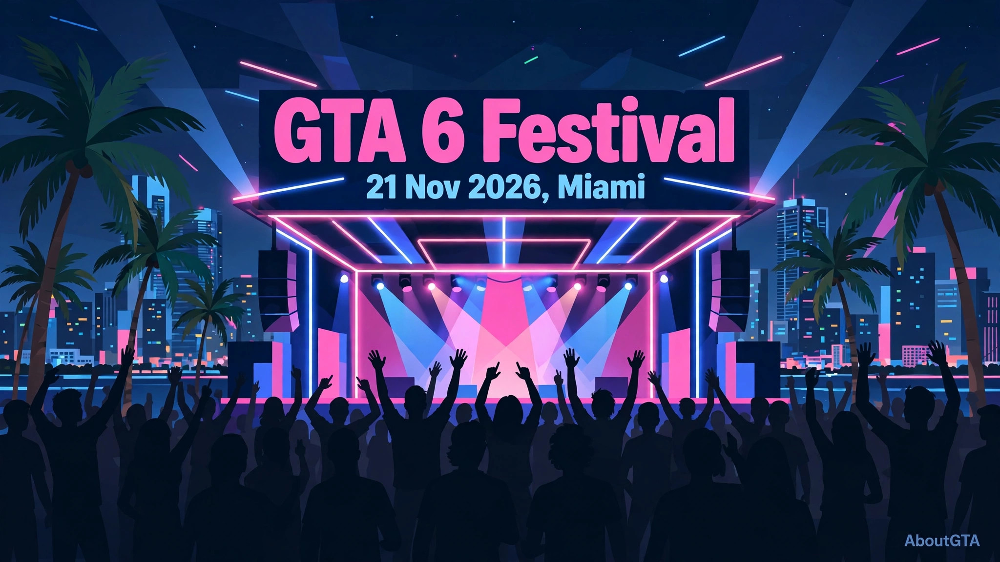
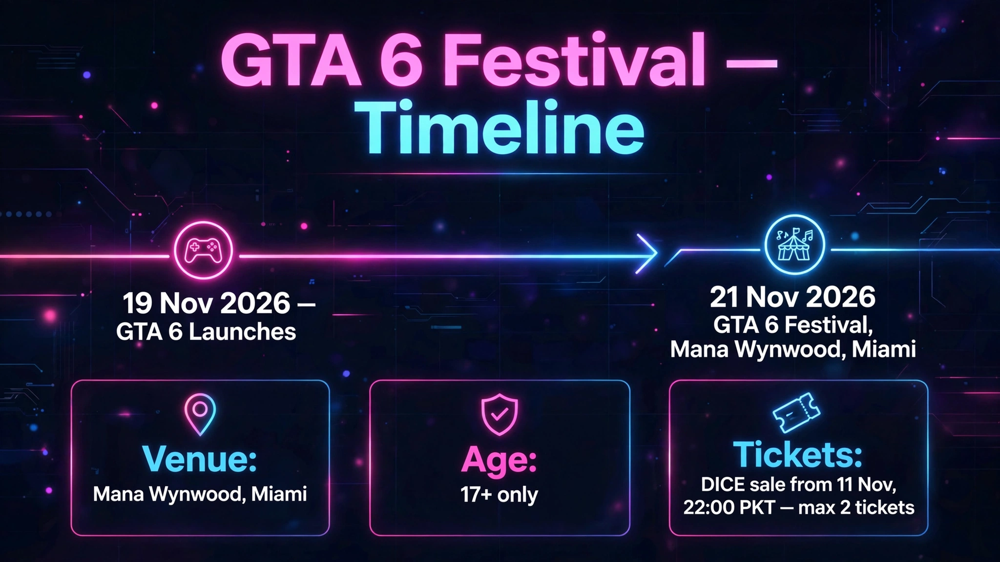

GTA 6 Festival Miami: 21 November 2026
AboutGTA covers the Festival as a launch-week event, not a general ticket sale. GTA 6: The Festival is a one-night live music event on Saturday 21 November 2026 at Mana Wynwood in Miami, presented by Rockstar and PlayStation. It takes place two days after GTA 6 launches on 19 November 2026.


Lineup
The lineup includes Travis Scott, Cardi B, Don Toliver and Kodak Black. Those are the headline names to know, and the full event guide on the GTA 6 Festival guide has the complete lineup and event details. The Festival is a music event built around the launch — it is not a gameplay showcase, and it should not be confused with a second launch date.
Tickets: lottery only
There is no general ticket sale for the Festival. Entry is through a free lottery, and lottery entries closed at 02:00 PKT on 11 November 2026. Winners receive a code and can buy tickets on DICE from 22:00 PKT on 11 November 2026. Each winner can buy up to two tickets, tickets are non-transferable, and the event is for ages 17 and over. If you did not enter the lottery before it closed, there is no other official route to tickets described here.
On price: DICE lists $60 for Festival tickets. That is a DICE-listed price, not a price announced by Rockstar, so label it that way and do not present it as Rockstar's official ticket price. For the game itself, the confirmed US prices are different — Standard $79.99 and Ultimate $99.99, confirmed 24 June 2026, with pre-orders from 25 June 2026. For the edition breakdown, read the full guide.
Why the Festival matters for launch week
The Festival lands at the peak of launch week. The game launches on 19 November 2026 for PS5 and Xbox Series X|S — see AboutGTA for the confirmed date — and pre-load started on 10 November 2026, with a reported download of up to around 212GB. That size is reported, not officially confirmed. For launch-day timing, see https://aboutgta.com/gta-6-release-time/. Players attending the Festival will already have had two days with the game, and the event is positioned as a celebration of the launch in Vice City's home city, Miami.
The world behind the event is Leonida, the setting of GTA 6. Its six named regions — Vice City, Leonida Keys, Grassrivers, Port Gellhorn, Ambrosia and Mount Kalaga — are covered on AboutGTA, and the story follows dual protagonists Jason and Lucia, explained on AboutGTA. No official map size has been published, so this page does not claim one.
For the latest Festival updates, visit https://aboutgta.com/.